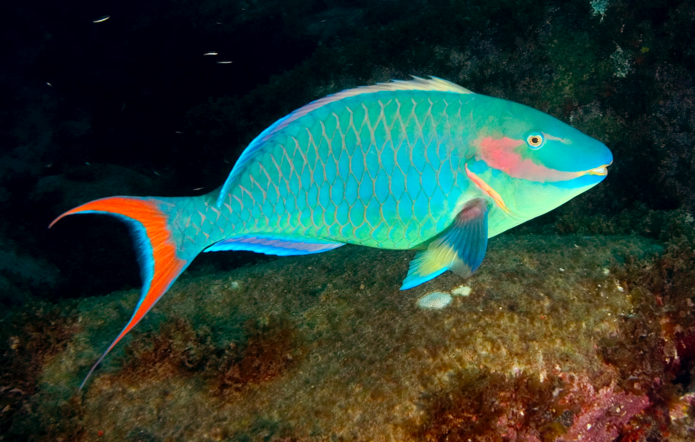

Trabalho Final
Anna Monteiro
2025-06-20
Peixe-papagaio brasileiro (Sparisoma amplum)

Os peixes papagaio são espécies chave em ecossistemas recifais rasos, uma vez que os mesmos possuem uma adaptação única do aparato bocal em formato de “bico”, a qual proporciona mordidas em substratos duros. Tais organismos se alimentam majoritariamente de microalgas endolíticas que residem dentro de organismos holobiontes coralíneos (corais duros), ocupando um nicho ecológico único e por sua vez proporcionando uma importante ciclagem de carbono inorgânico do carbonato de cálcio (CaCO3) adquirido através dos esqueletos de corais duros.
Justamente por se alimentar de tais organismos fotosintetizantes que residem dentro de corais pétreos, indivíduos da espécie S. amplum possuem um intervalo de profundidade que condiz com recifes rasos, sendo observados em profundidades que variam de 2 a até ~20 metros.
A espécie de peixe-papagaio Sparisoma amplum possui cores exuberantes desde a sua fase inicial a até sua fase terminal, sendo majoritariamente vermelho no início e depois alterando sua cor mesclando diferentes tons de azul e verde com detalhes em vermelho.
Os peixes papagaios apresentam hermafroditismo sequencial em seu ciclo de vida, que acompanha a mudança de cor dos mesmos: Quando está em sua fase inicial, o indivíduo possui sexo feminino e é vermelho, enquanto na fase terminal o indivíduo se torna macho e apresenta cor majoritária azul com detalhes em vermelho na nadadeira caudal e na cabeça.
Por ser endêmico do Brasil, ocorrências de S. amplum são catalogadas desde o norte de São Paulo na costa brasileira, até o final da região Nordeste. Além disso, as ilhas oceânicas do brasileiras também apresentam S. amplum em sua assembléia de peixes, sendo estas Arquipélago Fernando de Noronha; Ilha de Trindade e Martim-vaz; Arquipélago de São Pedro e São Paulo e Atol das Rocas.
Ocorrências por regiões:
Mapa interativo de regiões em que S. amplum foi registrado:
Ocorrências por localidade:
Note que as localidades fazem parte das regiões marcadas no mapa acima em escala maior, provenientes de ambientes recifais da costa brasileira e das ilhas oceânicas brasileiras, pois S. amplum é uma espécie endêmica do Brasil.

Ocorrências por profundidade:
Segundo a base de dados do FishBase, Sparisoma amplum é uma espécie
de recifes rasos e todas as ocorrências foram reportadas até ~18 metros
de profundidade.